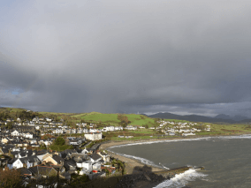

<!DOCTYPE html>
<html lang="en">
  <head>
    <meta charset="UTF-8" />
    <meta name="viewport" content="width=device-width, initial-scale=1.0" />
    <title>From Portland to Portland</title>
    <link rel="stylesheet" href="./pages/index.css" />
  </head>
</html>
<body class="page">
  <header class="header">
    
  </header>
  <section class="lead">
    <h1 class="lead__title">From Homeland to Homeland</h1>
    <h2 class="lead__subtitle">
      An epic journey from Kentucky to Burundi through Wales and Ukraine
    </h2>
    
  </section>
  <section class="intro">
    <h2 class="intro__title">
      Know the places your online pals come from a little better
    </h2>
    <quote class="intro__quote">
      Every human being is an artist, a freedom being, called to participate in
      transforming and reshaping the conditions, thinking, and structures that
      shape and inform our lives.
    </quote>
    <p class="intro__quote-author">— Joseph Beuys</p>
    <p class="intro__text">
      The town of Practicum has brought together professionals from different
      corners of the world. Today, Practicum Art Gallery is proud to present
      stories and pictures from some of the people who dedicate their time and
      effort to making the future tech professionals of this town feel at home.
      Each of us has a unique story about the place we come from. Feel free to
      add your own story and a piece of visual art dedicated to your hometown to
      our collection. No matter where you're from, we're glad that you're our
      neighbor.
    </p>
  </section>
  <section class="photo-grid">
    
    
    
    
    
    
    
    
  </section>
  <section class="places">
    <div class="place">
      <h2 class="place__title">Kyiv, Ukraine</h2>

      <div class="place__website">
        <p class="place__website_url-heading">Artist</p>
        <p class="place__website_link">Natalia Dolgushina, content producer</p>
      </div>
      
      <a
        href="https://www.theverge.com/22310188/nft-explainer-what-is-blockchain-crypto-art-faq"
        ><button class="button">Buy This artwork as NFT</button></a
      >
      <div class="place__paragraphs">
        <p class="place__paragraph">
          Kyiv (or Kiev), Ukraine's capital, is a large city located on the
          shores of the Dnipro river. Of course, no one in their right mind
          would swim in the river, unless they grew up here, in which case
          they've probably tried it at some point. Summers are hot here, and the
          winters are drafty, but the fall and the spring are are absolutely
          amazing.
        </p>
        <p class="place__paragraph">
          The city itself is a mix of pre-revolution, post-war and soviet
          architecture, all of it sprinkled with modified balconies. If you're
          on the right bank of the Dnipro, the landscape is difficult to
          traverse for people on bikes and those wearing heels. The left bank is
          considered far less interesting and prestigious though, even by people
          who live on the far outskirts of the right one.
        </p>
      </div>
    </div>
    <div class="place">
      <h2 class="place__title">Cricieth, Wales</h2>

      <div class="place__website">
        <p class="place__website_url-heading">Artist</p>
        <p class="place__website_link">Steffan Warren, lead editor, 
Kseniya</p>
        <p class="place__website_link">Glagoleva, project manager</p>
      </div>
      
      <a
        href="https://www.theverge.com/22310188/nft-explainer-what-is-blockchain-crypto-art-faq"
        ><button class="button">Buy This artwork as NFT</button></a
      >
      <div class="place__paragraphs">
        <p class="place__paragraph">
          The medieval ruin of Cricieth Castle overlooks the town below from a
          rock that juts out into the sea. It is thought to have been built by
          Llewelyn the Great in the 13th century. Some 900 years later, the
          self-styled Pearl of Wales on the Shores of Snowdonia has become a
          popular tourist destination during the summer months.
        </p>
        <p class="place__paragraph">
          A short walk down the road from the castle, you can enjoy the world's
          best ice cream at Cadwalader's, whose secret ingredient is rumored to
          be locally sourced seaweed. Another claim to fame is the fact that
          Cricieth won the Wales in Bloom award for five years in a row for its
          spectacular floral displays around town. It was also home to David
          Lloyd George, the only Welshman ever to hold the office of Prime
          Minister of the UK.
        </p>
      </div>
    </div>
    <div class="place">
      <h2 class="place__title">New Berea, USA</h2>

      <div class="place__website">
        <p class="place__website_url-heading">Artist</p>
        <p class="place__website_link">Travis Turner, author and editor</p>
      </div>
      
      <a
        href="https://www.theverge.com/22310188/nft-explainer-what-is-blockchain-crypto-art-faq"
        ><button class="button">Buy This artwork as NFT</button></a
      >
      <div class="place__paragraphs">
        <p class="place__paragraph">
          Berea is a small town located in the central part of Kentucky. The
          town is surrounded by beautiful forests and countryside. It's known as
          the arts and crafts capital of the state, and visitors will find
          plenty of shopping opportunities: shops with handmade jewelry,
          candles, wood items, galleries, glass studios, and more. The town
          holds an annual festival celebrating "spoonbread", a local dish made
          with cornbread and served with a wooden spoon.
        </p>
        <p class="place__paragraph">
          However, it's probably known best for the local college. Berea College
          was founded in 1855 and was the first college in the south to be
          racially integrated, as well as the first to be coeducational.
          Somewhat uniquely, it charges no tuition — every student receives a
          full-tuition scholarship.
        </p>
      </div>
    </div>
    <div class="place">
      <h2 class="place__title">Muramvya, Burundi</h2>

      <div class="place__website">
        <p class="place__website_url-heading">Artist</p>
        <p class="place__website_link">Grevisse Kenguruka, technical editor</p>
      </div>
      
      <a
        href="https://www.theverge.com/22310188/nft-explainer-what-is-blockchain-crypto-art-faq"
        ><button class="button">Buy This artwork as NFT</button></a
      >
      <div class="place__paragraphs">
        <p class="place__paragraph">
          Muramvya is one of the 18 provinces of Burundi. In the kingdom era,
          Muramvya was the royal capital and in 2007, because of its cultural
          and natural landscape, it was added to the UNESCO World Heritage
          Tentative List. It is located in the center of Burundi, between the
          two capitals (economic and political).
        </p>
        <p class="place__paragraph">
          The weather is rather chilly at night, but during the day, you would
          think you're in heaven. At 2,665 meters (8,743 ft) above sea level,
          Mount Teza is one of the coldest places in the province. But that cool
          breeze allows for one of the largest plantations of tea and coffee in
          the country, which make up the bulk of Burundi's exports.
        </p>
        <p class="place__paragraph">
          The Kibira National Park, one of the largest wildlife reserves for
          apes, overlaps four provinces, including Muramvya. This National Park
          lies at the apex of the beautiful mountains of the Congo-Nile Divide,
          ranging between 1,550 and 2,660 meters of altitude. It is filled with
          beautiful vegetation, and a source for the various rivers and streams
          which provide water around the country.
        </p>
      </div>
    </div>
    <div class="place">
      <h2 class="place__title">Miami, FL</h2>

      <div class="place__website">
        <p class="place__website_url-heading">Artist</p>
        <p class="place__website_link">Andrea Claeyssen, World Traveler</p>
      </div>
      
      <a
        href="https://www.theverge.com/22310188/nft-explainer-what-is-blockchain-crypto-art-faq"
        ><button class="button">Buy This artwork as NFT</button></a
      >
      <div class="place__paragraphs">
        <p class="place__paragraph">
          Miami is nicknamed Magic City. It is a melting pot for all of Latin
          America. While the main language is English, as it's in the United
          States, the unofficial main language is Spanish. There is a high
          population of Cuban-Americans because of many refugees that fled Cuba
          in the 1950s. Now in Miami you can find Cuban influence everywhere!
          From little Havana, to Calle Ocho, to the many Cuban Restaurants and
          nightlife, the Cuban influence is 100% apparent.
        </p>
      </div>
    </div>
  </section>
  <section class="cover">
    <h2 class="cover__title">Visit Us</h2>
    <h3 class="cover__subtitle">
      Year-round Practicum Art Gallery 404 Tim Berners-Lee Ave
    </h3>
    <a
      href="https://www.theverge.com/22310188/nft-explainer-what-is-blockchain-crypto-art-faq"
      class="button cover__button"
      >Buy Tickets</a
    >
  </section>
  <footer class="footer">
    <p class="footer__copyright">© 2021. Andrea Claeyssen</p>
  </footer>
</body>
